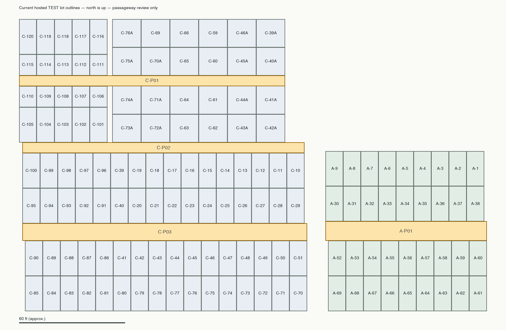

Expanded scope: Sections B and D also contain candidate passageways. See the B/D addendum and revised ten-passageway proposal, including D/E boundary uncertainties.
Read-only review of the Original 2017 and Updated 2022 worksheets in Trinity Cemetery Registry 2022.xlsx, alongside hosted TEST lot geometry and aggregate gravesite/monument checks on 28 October 2026. No application, registry, assignment or boundary changes were made.
Start with four corridor identifiers. The older lot-pair descriptions identify positions within these corridors, rather than a new passageway for every pair. Proposed Section C numbering runs north to south. The shaded strips are approximate review areas, not final passageway polygons or surveyed boundaries.

| Suggested ID | Map location | Candidate mapped gravesites outside lots | Candidate monuments outside lots | Registry rows (2017 / 2022) |
|---|---|---|---|---|
| A-P01 Section A passageway | Between the A-30–A-38 row and A-52–A-60 row. | 10 | 7 | 8 / 9 |
| C-P01 Section C northern passageway | Between C-106–C-110 and C-111–C-115 in the west; continues east between the two blocks of larger lots, including C-64/C-65, C-60/C-61 and the A-suffixed lots. | 10 | 10 | 11 / 11 |
| C-P02 Section C middle passageway | North of C-96–C-100, C-39 and C-10–C-19; south of C-101–C-105 and the lower block of larger lots. | 18 | 15 | 16 / 16 |
| C-P03 Section C southern passageway | Between the C-91–C-95/C-40/C-20–C-29 row and C-86–C-90/C-41–C-51 row. | 16 | 15 | 15 / 15 |
Spatial counts use a representative point for each active mapped gravesite and the observed point for each active monument, inside approximate corridor bands and outside active lot polygons. They are candidate map records, not a count of sold rights, burials, remaining capacity or confirmed passageway assignments. They may omit records near corridor ends or boundaries. One additional gravesite point in the northern band falls inside an existing lot and is excluded. Names were compared on TEST only; surname matches are corroboration, not ownership proof.
All 101 passage rows are preserved below (50 from Original 2017, 51 from Updated 2022). Only location text and cell addresses are reproduced. Owner addresses and contact information are omitted. Original 2017 location text is in column G; Updated 2022 is in column F. The investigated sheet has no rows containing “passag” and is not a separate passage inventory.
| Reference pair / position | Original 2017 exact text and cells | Updated 2022 exact text and cells | Interpretation / review |
|---|---|---|---|
| 30-52 | G127: Passage 30 -52 | F134: Passage 30 -52 | Fits this corridor’s opposing lot rows. Final gravesite assignments and corridor limits still require review. |
| 31-53 | G10: Passage 31-53G197: Passage 31-53 | F16: 10'Passage between 53 and 31F205: Passage 31-53 | Updated 2022 F16 reverses the pair to 53 and 31 and adds a 10-foot width. The separate F205 row says No evidence in records; preserve that uncertainty. |
| 33-55 | G53: Passage 33-55 | F55: Passage 33-55 | Fits this corridor’s opposing lot rows. Final gravesite assignments and corridor limits still require review. |
| 34-56 | G66: Passage 34-56 | F68: Passage 34-56 | Fits this corridor’s opposing lot rows. Final gravesite assignments and corridor limits still require review. |
| 35-57 | G103: Passage 35-57 | F109: Passage 35-57 | Fits this corridor’s opposing lot rows. Final gravesite assignments and corridor limits still require review. |
| 36-58 | G104: Passage 36-58 | F110: Passage 36-58 | Fits this corridor’s opposing lot rows. Final gravesite assignments and corridor limits still require review. |
| 37-59 | G108: Passage 37-59 | F115: Passage 37-59F145: Passage 37-59 | 2022 contains both the retained interest and the 2021 transfer to another owner. Do not count the rows as separate passageways or assume all sold capacity remains available. |
| Reference pair / position | Original 2017 exact text and cells | Updated 2022 exact text and cells | Interpretation / review |
|---|---|---|---|
| 44-45 | G115: Passage 44-45G146: Passage 44-45 | F123: Passage 44-45F154: Passage 44-45 | Map interpretation uses current C-44A/C-45A. The southern C-44/C-45 share an ordinary lot edge. Keep the original unsuffixed source wording. |
| 60-61 | G90: Passage 60-61G185: Passage 60-61 | F93: Passage 60-61F193: Passage 60-61 | Fits this corridor’s opposing lot rows. Final gravesite assignments and corridor limits still require review. |
| 64-65 | G92: Passage 64-65 | F95: Passage 64-65 | Fits this corridor’s opposing lot rows. Final gravesite assignments and corridor limits still require review. |
| 70-71 | — | F170: Passage 70-71 | 2022 drops the A suffixes present in Original 2017 G163. Map location is the northern corridor between C-70A/C-71A, not the southern C-70/C-71. |
| 70A-71A | G163: Passage 70A-71A | — | 2017 preserves suffixes that are dropped in 2022 (70-71). Map location is the northern corridor between current C-70A/C-71A. |
| 74A-75A | G169: Passage 74A-75A | — | Original 2017 G169 uses A suffixes; Updated 2022 F176 drops them. Candidate location is the northern corridor between C-74A/C-75A. |
| 74-75 | G164: Passage 74-75 | F171: Passage 74-75F176: Passage 74-75 | Both older unsuffixed references and a 2022 loss of the A suffix occur. Candidate location is the northern corridor between current C-74A/C-75A; retain separate source/owner records. |
| 107-112 | G151: Passage 107-112 | F159: Passage 107-112 | Fits this corridor’s opposing lot rows. Final gravesite assignments and corridor limits still require review. |
| 108-113 | G243: Passage 108-113 | F255: Passage 108-113 | Fits this corridor’s opposing lot rows. Final gravesite assignments and corridor limits still require review. |
| 109-114 | G244: Passage 109-114 | F256: Passage 109-114 | Fits this corridor’s opposing lot rows. Final gravesite assignments and corridor limits still require review. |
| Reference pair / position | Original 2017 exact text and cells | Updated 2022 exact text and cells | Interpretation / review |
|---|---|---|---|
| 11-42 | G101: Passage 11-42 | F105: Passage 11-42 | Map interpretation uses current C-42A, not the southern C-42. |
| 12-42 | G200: Passage 12-42 | F209: Passage 12-42 | Map interpretation uses current C-42A, not the southern C-42. |
| 13-43 | G89: Passage 13-43 | F92: Passage 13-43 | Map interpretation uses current C-43A, not the southern C-43. |
| 14-62 | G107: Passage 14-62 | F114: Passage 14-62 | Fits this corridor’s opposing lot rows. Final gravesite assignments and corridor limits still require review. |
| 15-62 | G91: Passage 15-62 | F94: Passage 15-62 | Fits this corridor’s opposing lot rows. Final gravesite assignments and corridor limits still require review. |
| 16-63 | G61: Passage 16-63 | F63: Passage 16-63 | Fits this corridor’s opposing lot rows. Final gravesite assignments and corridor limits still require review. |
| 17-72 | G12: Passage 17-72 | F17: Passage between 17-72 | Map interpretation uses current C-72A, not the southern C-72. |
| 18-72 | G145: Passage 18-72 | F153: Passage 18-72 | Map interpretation uses current C-72A, not the southern C-72. |
| 30-73 | G140: Passage 30-73 | F148: Passage 30-73 | Tentative corridor only. Both editions also have a separate 39-73 row for the same owner. No C-30 lot exists in the current map. Do not silently change 30 to 39 or merge the two allocations. |
| 39-73 | G141: Passage 39-73 | F149: Passage 39-73 | Map interpretation uses current C-39 and C-73A. The separate 30-73 registry row remains unresolved. |
| 79-102 | G207: Passage 79-102 | — | 2017 wording. Updated 2022 F216 changes this to Passage 97-102; H216 explicitly says 97-102, not 79. Preserve the original wording as a superseded source reference. |
| 96-101 | G8: Passage 96-101 | F14: Passage between 96-101 | Fits this corridor’s opposing lot rows. Final gravesite assignments and corridor limits still require review. |
| 97-102 | G82: Passage 97-102 | F85: Passage 97-102F216: Passage 97-102 | Updated 2022 F216 and H216 correct the 2017 79-102 wording. Original 2017 G82 already uses 97-102 for the prior owner. These are source/transfer history, not additional land. |
| 98 | G6: Passage 98 | F10: Passage 98 | Tentative: a single lot number does not establish the opposite boundary. The map suggests the middle corridor, but a deed/field check is still needed. |
| 98-103 | G48: Passage 98-103 | F50: 8' Passage between 98-103 | Fits this corridor’s opposing lot rows. Final gravesite assignments and corridor limits still require review. |
| 99-104 | G74: Passage 99-104 | F78: Passage 99-104 | Fits this corridor’s opposing lot rows. Final gravesite assignments and corridor limits still require review. |
| Reference pair / position | Original 2017 exact text and cells | Updated 2022 exact text and cells | Interpretation / review |
|---|---|---|---|
| 20-42 | G81: Passage 20-42 | F84: Passage 20-42 | Fits this corridor’s opposing lot rows. Final gravesite assignments and corridor limits still require review. |
| 22-44 | G224: Passage 22-44 | F233: Passage 22-44 | Fits this corridor’s opposing lot rows. Final gravesite assignments and corridor limits still require review. |
| 23-45 | G42: Passage 23- 45 | F44: 10' Passage between 23- 45 | Fits this corridor’s opposing lot rows. Final gravesite assignments and corridor limits still require review. |
| 24-46 | G209: Passage 24-46 | F218: Passage 24-46 | Fits this corridor’s opposing lot rows. Final gravesite assignments and corridor limits still require review. |
| 25-47 | G219: Passage 25-47 | F228: Passage 25-47 | Fits this corridor’s opposing lot rows. Final gravesite assignments and corridor limits still require review. |
| 26-48 | G106: Passage 26-48 | F113: Passage 26-48 | Fits this corridor’s opposing lot rows. Final gravesite assignments and corridor limits still require review. |
| 27-49 | G235: Passage 27-49 | F247: Passage 27-49 | Fits this corridor’s opposing lot rows. Final gravesite assignments and corridor limits still require review. |
| 28-50 | G236: Passage 28-50 | F248: Passage 28-50 | Fits this corridor’s opposing lot rows. Final gravesite assignments and corridor limits still require review. |
| 29-51 | G196: Passage 29-51 | F204: Passage 29-51 | Fits this corridor’s opposing lot rows. Final gravesite assignments and corridor limits still require review. |
| 40-41 | G80: Passage 40-41G247: Passage 40-41 | F83: Passage 40-41F259: Passage 40-41 | Fits this corridor’s opposing lot rows. Final gravesite assignments and corridor limits still require review. |
| 86-91 | G21: Passage 86-91 | F25: 10' Passage between 86-91 | Fits this corridor’s opposing lot rows. Final gravesite assignments and corridor limits still require review. |
| 87-92 | G114: Passage 87-92 | F121: Passage 87-92 | Fits this corridor’s opposing lot rows. Final gravesite assignments and corridor limits still require review. |
| 88-93 | G130: Passage 88-93 | F137: Passage 88-93 | Fits this corridor’s opposing lot rows. Final gravesite assignments and corridor limits still require review. |
| 89-94 | G131: Passage 89-94 | F138: Passage 89-94 | Fits this corridor’s opposing lot rows. Final gravesite assignments and corridor limits still require review. |
Recommendation: retain exact source wording, worksheet and cell/row for each evidence record. Link those records to a proposed passageway only after review. Do not rename existing gravesites or monuments, infer ownership, merge deed rows, or create passageway geometry from this proposal alone.